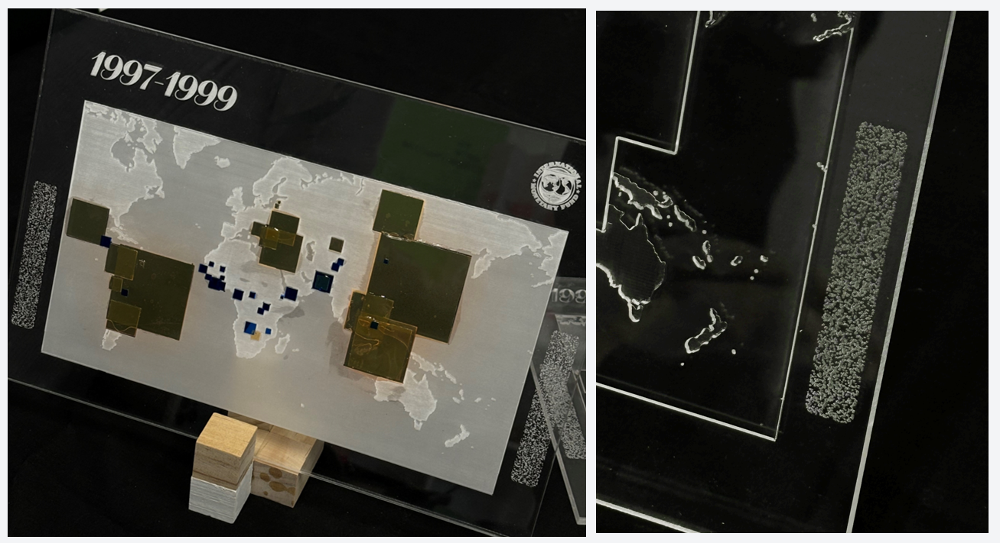
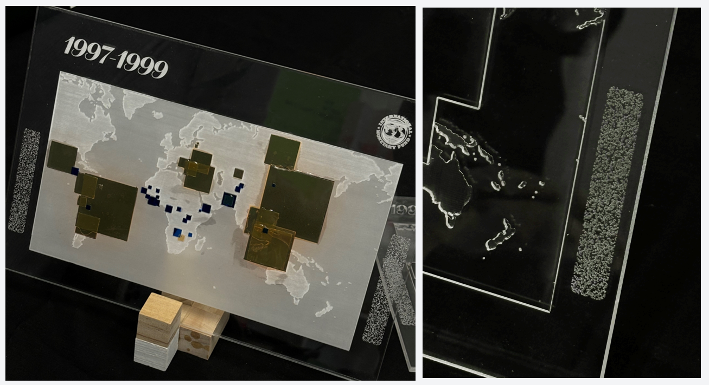

Collaborative Projects of Data Visualization for IMF's 70th Anniversary
Data Visualization / Design Cooperation / 2024
A collaboration project between LCC Ma Design for Data Visualization with the International Money Fund. We designed a set of data visualization posters and a visual interactive installation for our partners' 80th anniversary conference this year.
These two posters respectively showcase "Trading Focus" and "Lending Instruments." One emphasizes the geographical shift in trading focus. Another focuses on the evolution of IMF lending instruments with various countries over the years, providing background on global economic history.
 We visualized the data of IMF’s commitments with partners over the 80 years through this interactive installation. It contains 24 accessible acrylic boards with figure of the data in each 3-year time span. The data is engraved into relief by laser and is colored with stickers. The transparency of boards allow allows viewers to watch historical changes directly along time. Also, the Audience can take one board to read the information and explore more detailed knowledge by scanning the QR code.
We visualized the data of IMF’s commitments with partners over the 80 years through this interactive installation. It contains 24 accessible acrylic boards with figure of the data in each 3-year time span. The data is engraved into relief by laser and is colored with stickers. The transparency of boards allow allows viewers to watch historical changes directly along time. Also, the Audience can take one board to read the information and explore more detailed knowledge by scanning the QR code.
 To have a clearer and deeper view of the dataset, we organized the data of each commitment into squares, and represented the variables with the geometric figures. All the commitments made with in a 3-years time span is collected on one map board as a chart, which is associated with world events during the certain period in the viewer's mind.

To have a clearer and deeper view of the dataset, we organized the data of each commitment into squares, and represented the variables with the geometric figures. All the commitments made with in a 3-years time span is collected on one map board as a chart, which is associated with world events during the certain period in the viewer's mind.
